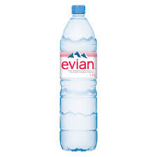

Managment of Natural Resources Reuse yesterday and Recycle today to reduce tomorrow!
List of Water Bottle Brands:
1. Smart Water.
2. Aquafina.
3. Dasani.
4. Evian.
Smart Water:
It contains magnesium, potassium, sodium and calcium minerals and most of it is Calcium( 5.63g ).
Aquafina:
It contains carbonates, bicarbonates, chlorides, sulfates, phosphates, nitrates, calcium, magnesium, sodium, potassium, iron and manganese minerals and most of it is Carbonates( 4.32g ).
Dasani:
It contains calcium chloride, sodium magnesium chloride, and potassium bicarbonate minerals and most of it is Calcium Chloride( 6.71g ).
Evian:
It contains Calcium, Magnesium, Potassium, Sodium and Nitrates minerals and most of it is Calcium( 80g ).
Calcium is found in all and most of the water bottle brands because it very very essential for our bones and health!.
Dasani Water Brand has the most amount of mineral sodium which is 10g/l.
Some helpful hyperlinks:
- From where I found brands
- Smart Water Official Website
- Aquafina Official Website
- Dasani Official Website
- Evian Official Website